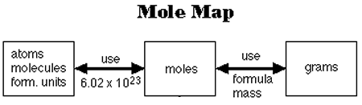

What is mole science?

mole science basically utilizes the measurement of atoms known as a mole.
a mole unit is used to calculate grams or atoms of a element and can also be known as molar mass or avagadros number.
the number of units in a mole are 6.03x10^23
this unit is often used in the calculations of grams or atoms in a element or chemical formula. this is done by the formula shown below.
